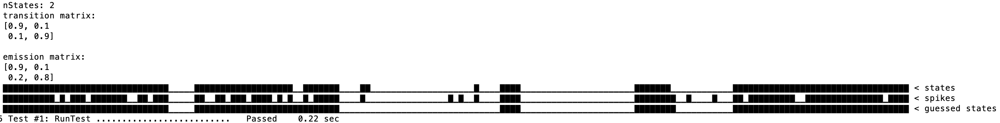

|
HMM
Toolbox for hidden Markov models
|


|
|
HMM
Toolbox for hidden Markov models
|
|
hmm is a simple set of hidden Markov model (HMM) code intended to support control of switching linear dynamical systems.
It contains methods for generating and decoding systems with discrete latent states and discrete observed signals.
see also: rtxi-hmmDecoder and rtxi-hmmGenerator for application of this library in modules intended for the RTXI platform
src source files (*.cpp)include header files (*.h)examples demonstrating functionality, includes tutorialmatlab for comparing matlab and C++ implementationsscripts utilities for setting up hmm librarydocs files for creating Doxygen documentationlegacy old implementations (could likely be safely deleted)For basic project build & install
see the build and test process in action: 
For basic benchmarking and verification of a successful install

sometimes, the first time I build after a clean install I get: `the C compiler "/opt/anaconda3/bin/x86_64-apple-darwin13.4.0-clang" is not able to compile a simple test program.`
This happens when i'm in a conda environment with an older version of clang conda deactive usually fixes the issue